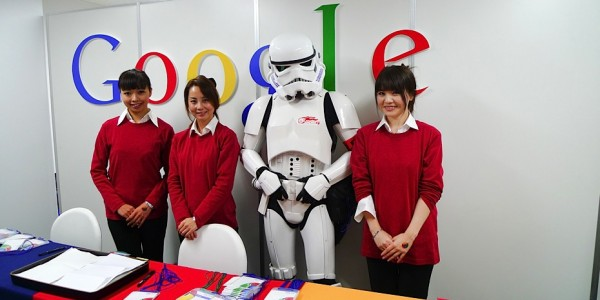

Thoughts on P2P computing
Freiburg Sep 24th 2014
Holger Krekel
the espionage cartel
is global
cartel business partners
Everything is clear
We know how to tell good (decentral) from evil (central), don't we?
Lesson 1: decentral is everywhere
- youtube
- gmail
social: communication and sharing
technical: CDNs, geo-deploy etc.
what's centralized about those services, exactly?
Ownership / Eigentum
Who owns the "decentral world"?
Espionage cartels are happy
- communication mediated by few companies
- companies own infrastructure and software
- companies can be compelled to co-operate
(graphic from Wired)
E2E encryption to the rescue!?
- Apple does End-to-End encryption (they say)
- Gmail goes for End-to-End encryption
- Threema provides End-to-End encryption
everything is good, right?
Lesson 2: End-to-End not enough
- Mediator (company) tracks Metadata
- software can not be independently verified
- software updates may undermine E2E
who operates mediator nodes
who writes the software?
best mediator ownership
- no mediator/supernodes needed
- many different entities
- non-profit foundations
- small trustable companies
...
Inf-2. "don't be evil" big companies?
Inf-1. "don't be evil" governments?
Other End-to-End software needs
run on user-owned device
transparent source code
community driven, trustable writers
(note: not saying OpenSource!)
Lesson 3: convenience rules
Prototype / Algorithm is not enough:
- UX matters.
- Convenience matters.
Unless:
- you feel threatened
- a solution is the only one
"Marketing" E2E+ products
- UX must compete against centralized competitors
- better privacy/open software dev "just" a plus
Lesson 4: Monetization through centralization
Controling a central WWW site means:
- determining what it does (tracking)
- determining what software runs on clients
- $$$ selling access or ads $$$
- improving the site, go back to 1.
recipe for eventually convenient software
Funding for E2E+ software?
- crowd funding for initial ideas/prototypes
- selling apps on mobiles
- selling licenses to companies
- DAOs / selling own currencies
other ideas?
Lesson 5: (Dis)Trust through (De)centralization
- Brands are trusted somewhat (or not)
- Trustless systems don't work (or do/Bitcoin)
Lesson 6: economic centralization
- most startups just aim to sell to the big ones
- seldomly try to just build sustainable business
Lesson 7: Secession from the broadcast
Gene Youngblood:
- we have Apocalypse: global eco-social crisis
- we have Utopia: presence of internet media
"Can we create at the same scale as we can destroy?"
"We have met the enemy, and it is us"
Lesson 8: d14n sees a lot of movements
http://tox.im : skype alternative, big community
http://ethereum.org : P2P contracting, decentral apps
http://mailpile.is : "let's take email back"
(tons of startups built on WebRTC)
(tons of other projects)
Resources
- many videos about #d14n projects: http://redecentralize.org
- Research/documenting P2P practises: http://blog.p2pfoundation.net/
- IndieWebTech conferences: http://indiewebcamp.com/
- ML: send email to redecentralize@librelist.com to join